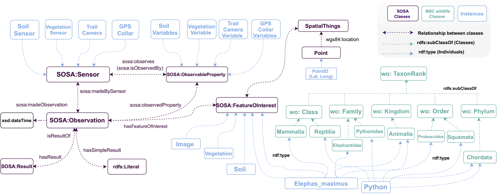
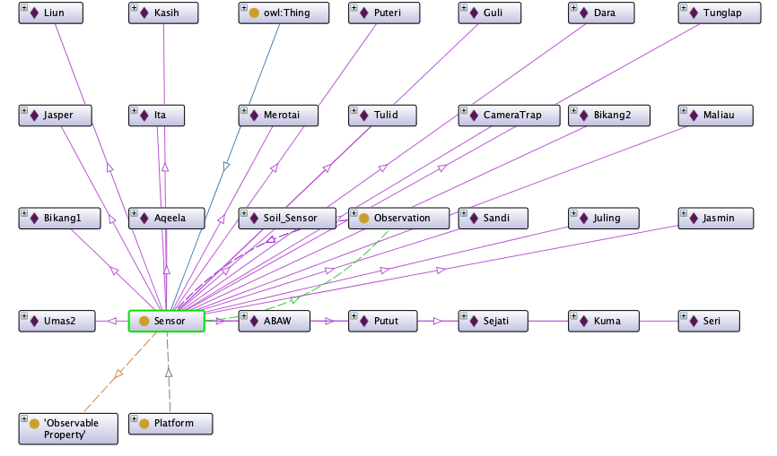

FOO Implementation
Contents
FOO Implementation#
The main goal of FOO is to enable standard data sharing between various computer systems and applications- in addition to providing unified access to heterogeneous wildlife data. To incorporate diverse wildlife datasets from various sources, FOO standardises these data entities and formalises their semantics. It also enables applications for structured data mining, machine learning, and artificial intelligence. Classes and relationships were reused from SOSA and the BBC Wildlife Ontology since they had enough features to model the concepts we proposed (i.e., instances or individuals). With the ontology stakeholders, we built conceptual models (i.e., diagrams) and debated them. FOO was encoded in Web Ontology Language (OWL), edited it with Protégé, and pipeline (i.e., Python codes) were written to serialise the datasets that populated it.

FOO Entities and their Definitions#
OWL Class |
URI |
Description |
|---|---|---|
Observation |
SOSA |
Act of carrying out an (Observation) Procedure to estimate or calculate a value of a property of a FeatureOfInterest (e.g., Elephant). Observation can be seen as a placeholder that links relevant information together. As illustrated in Figure 5, in our ontology, observation can be thought of as an ID for each data record. Each raw depicts a data record. |
ObservableProperty |
SOSA |
An observable quality (property, characteristic) of a FeatureOfInterest. (e.g., Temperature, humidity, presence) |
Sensor |
SOSA |
Device, agent (including humans), or software (simulation) involved in, or implementing, a Procedure. (e.g., Temperature sensor, humidity sensor, motion sensor). In our model, we have created a unique ID for each sensor based on the platform it is hosted by. |
FeatureOfInterest |
SOSA |
The thing whose property is being estimated or calculated in the course of an Observation to arrive at a Result, or whose property is being manipulated by an Actuator, or which is being sampled or transformed in the act of Sampling. In the context of FOO, Soil is the FeatureOfInterest. Most of the sensors are used to observe a property (phenomenon) of a location (e.g., the moisture of soil). |
Result |
SOSA |
The Result of an Observation, Actuation, or act of Sampling. To store an observation’s simple result value one can use the hasSimpleResult property. Result act as a place holder to link related information such as values and units. |
SpatialThing |
SOSA |
A class for representing anything with a spatial extent, i.e., size, shape or position. |
TaxonRank |
WO |
Generic concept for a taxonomic rank such as a Genus or Species. |
Class |
WO |
“associates a taxon rank with a class” |
Family |
WO |
A family is a scientific grouping of closely related organisms. It has smaller groups, called genera and species, within it. A family can have a lot of members or only a few. Examples of families include the cats (Felidae), the gulls (Laridae) and the grasses (Poaceae). |
Genus |
WO |
A genus is a scientific way of showing that species are very closely related to each other. In fact, the first word of the species’ scientific name is its genus. So for lions (Panthera leo), Panthera is the genus and tells us that they are closely related to tigers (Panthera tigris), because they share the name. |
Kingdom |
WO |
Kingdoms are the major categories into which scientists divide up all living things. The main kingdoms are animals, plants, fungi and bacteria, although others exist. Each Kingdom has its suite of defining characteristics - for instance, plants have rigid cell walls, whilst animals do not. |
Order |
WO |
An order is a scientific way to categorise related organisms. An order is a smaller grouping than a class but bigger than a family or genus. Examples of orders are willows, cockroaches and primates. |
Phylum |
WO |
A phylum - also known as a division when referring to plants - is a scientific way of grouping together related organisms. All the members of a phylum have a common ancestor and anatomical similarities. For instance, all arthropods have external skeletons. Phlya are large groups and are further subdivided into classes, orders, families and so on. |
FOO Heavyweight Model#
